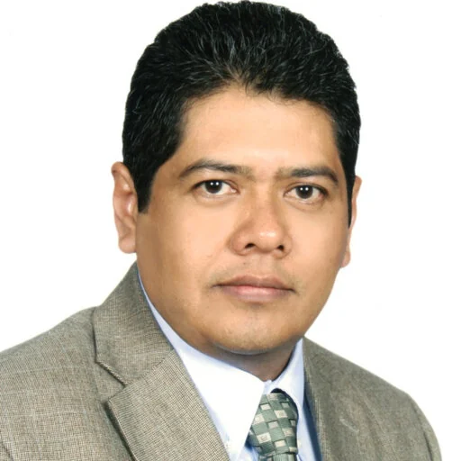
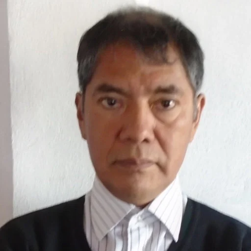

Área de investigación 01
Modelación matemática
Desarrollo de modelos matemáticos para describir, analizar y predecir el comportamiento dinámico de biosistemas complejos.
El laboratorio articula investigación aplicada, modelación matemática y desarrollo tecnológico para optimizar biosistemas agrícolas de manera sustentable y eficiente.
Área de investigación 01
Desarrollo de modelos matemáticos para describir, analizar y predecir el comportamiento dinámico de biosistemas complejos.
Área de investigación 02
Diseño de estrategias de control para la regulación del microclima y fertirriego, mejorando la estabilidad y eficiencia de los biosistemas.
Área de investigación 03
Integración de sensores, dispositivos y arquitecturas de adquisición de datos para el monitoreo confiable de variables en tiempo real.
Área de investigación 04
Desarrollo y validación de sistemas mecatrónicos y plataformas de automatización para la ejecución de tareas en entornos experimentales.
Conoce a las investigadoras, investigadores y estudiantes que dan vida a los proyectos científicos y tecnológicos del Laboratorio de Modelación y Automatización de Biosistemas en la Universidad Autónoma Chapingo.

Promovemos un entorno donde estudiantes de licenciatura y posgrado interactúan directamente con los investigadores titulares en el diseño, instrumentación y control de biosistemas reales.
Dirección científica y coordinación de proyectos

Profesor Investigador Titular · Responsable del Laboratorio
Especialista en modelación matemática, control climático en ambientes protegidos, dinámica de fluidos computacional (CFD) y sustentabilidad energética.

Profesor Investigador · Posgrado en Ingeniería Agrícola
Especialista en algoritmos evolutivos y bioinspirados, control óptimo y predictivo basado en modelos (MPC), optimización matemática, y modelación matematica.
Red interinstitucional y especialistas asociados

Investigadora Colaboradora
Producción en agricultura protegida, fisiología vegetal, sistemas acuapónicos y calidad de cosecha.

Investigador Colaborador
Física ambiental, agrometeorología, redes neuronales y dinámica de fluidos en ambientes protegidos.

Investigador Colaborador
Modelado de cultivos, diseño de invernaderos, ambiente protegido y optimización energética en biosistemas.

Investigador Colaborador
Instrumentación electrónica, redes de sensores inalámbricas, telemetría y sistemas embebidos.
Investigación en Doctorado y Maestría en Ciencias
 Doctorado · IAUIA
Doctorado · IAUIA
Línea: Dinámica CFD y Simulación Microclimática
Monitoreo 3D y análisis de dinámica de fluidos computacional (CFD) del ambiente de invernaderos bajo ventilación natural.
 Maestría · IAUIA
Maestría · IAUIA
Línea: Modelación Matemática y Control en Biosistemas
Diseño de leyes de control predictivo, optimización de recursos y modelación dinámica de variables agroclimáticas.
 Maestría · IAUIA
Maestría · IAUIA
Línea: Instrumentación y Redes de Adquisición de Datos
Integración de redes de sensores, hardware embebido y monitoreo continuo multivariable en tiempo real.
Tesistas y residentes en formación en Ingeniería Mecánica Agrícola
 Licenciatura · Tesista
Licenciatura · Tesista
Ingeniería Mecánica Agrícola · UACh
Desarrollo de proyectos de automatización, mecatrónica agrícola y pruebas experimentales en ambientes protegidos.
 Licenciatura · Tesista
Licenciatura · Tesista
Ingeniería Mecánica Agrícola · UACh
Instrumentación, diseño de prototipos mecatrónicos y sensado de variables agroclimáticas en invernadero.
Investigadores y profesionales formados en el LMAB que concluyeron exitosamente sus tesis
Doctorado · 2020
Control de DPV en invernadero con nebulización
Doctorado · 2023
Sistema inteligente para control mecánico de maleza
Maestría · 2024
Visión artificial y deep learning para detección de fresas
Maestría · 2018
Sistema de calefacción solar para invernaderos sustentables
Licenciatura · 2018
Cámara de crecimiento vegetal de arquitectura abierta
Licenciatura · 2018
Dimensionamiento térmico de calefacción solar
Licenciatura · 2018
Análisis CFD de invernadero asimétrico con pared húmeda
Licenciatura · 2018
Análisis CFD de microclima nocturno en invernadero tipo chino
Licenciatura · 2017
Diseño e instrumentación de digestor para metano
Licenciatura · 2016
Diseño de cabezal cosechador para higuerilla
Licenciatura · 2016
Monitoreo continuo de DPV en invernadero
Licenciatura · 2015
Control y optimización de fertirriego
Continuamente abrimos espacios para tesistas de licenciatura, estudiantes de maestría y doctorado, así como estancias académicas en automatización y modelación de biosistemas.